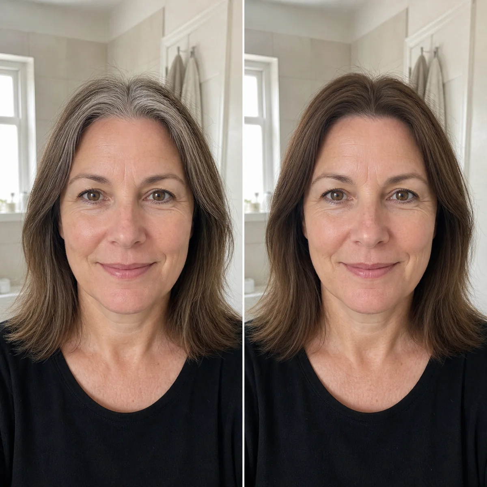
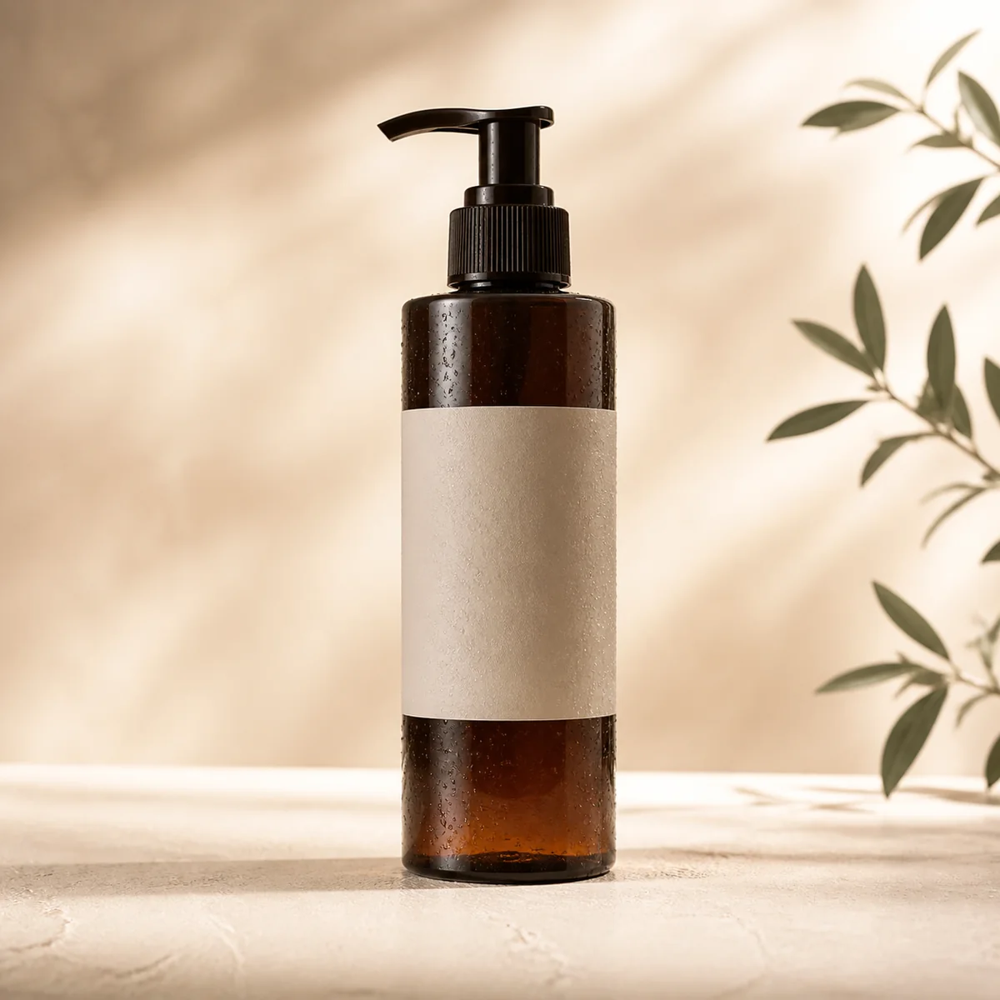

5 Reasons Women Are Replacing Messy Box Dye With This 10-Minute Color Shampoo
No salon appointment. No ammonia smell. No complicated mixing.

“I covered my stubborn temple grays in one shower. The whole routine felt almost too easy.”
If you’re tired of planning your week around root touch-ups, staining old towels, and breathing in that unmistakable chemical smell, there’s a simpler option. Color-depositing shampoo works like a regular wash-day product while refreshing the look of gray roots in minutes.
Ready straight from the bottle. Apply to dry hair, wait 10 minutes, then rinse. That’s it.
See a More Even-Looking Color in Just 10 Minutes
Traditional dye turns a simple touch-up into a project. This shampoo format skips the bowl, brush, and careful measuring. Pump, apply, let it sit, and rinse it out in the shower.

BEFOREAFTERExample result shown in Medium Brown. Individual results and processing time can vary.
●Low stock in several shades
Skip the Harsh Ammonia Routine
Repeated box-dye use can leave hair feeling dry and brittle. A gentler color shampoo is designed to refresh your look while cleansing, without the sharp odor and complicated aftercare.

Color meets everyday hair care
- ✓ Soft, touchable finish
- ✓ No bleach required
- ✓ Fresh herbal scent
Powered by familiar botanical extracts
Traditionally used in East Asian hair-care rituals.
Adds a conditioning, shine-supporting touch.
A nutrient-rich botanical with a long beauty tradition.
Used in formulas designed to care for the scalp.
Natural-Looking Coverage in the Shade You Actually Want
The formula deposits color gradually and evenly, helping avoid the flat, one-tone look that makes fresh box dye so obvious. Choose the shade closest to your natural color.
One Bottle Can Replace Months of Touch-Up Kits
The pump lets you use only what your roots need, so the rest stays fresh for next time. Depending on hair length, one bottle can provide 10 to 15 applications.
It Fits Into the Shower Routine You Already Have
No special training and no salon technique. Keep a pair of gloves nearby, follow the directions, and refresh your roots when it suits your schedule.
Pump
Dispense onto gloved hands.
Apply
Work through dry hair evenly.
Rinse
Wait 10 minutes, then wash out.
Jamie Taylor I was skeptical, but the routine really is simple. My hair still feels like hair afterward.Like · Reply · 3w
👍 18Alex Nguyen Finally something I can use just on my temples instead of coloring everything.Like · Reply · 2w
❤️ 11Rosa Chen The medium brown blended in beautifully. Ordering a second bottle for my travel bag.Like · Reply · 5d
👍 7